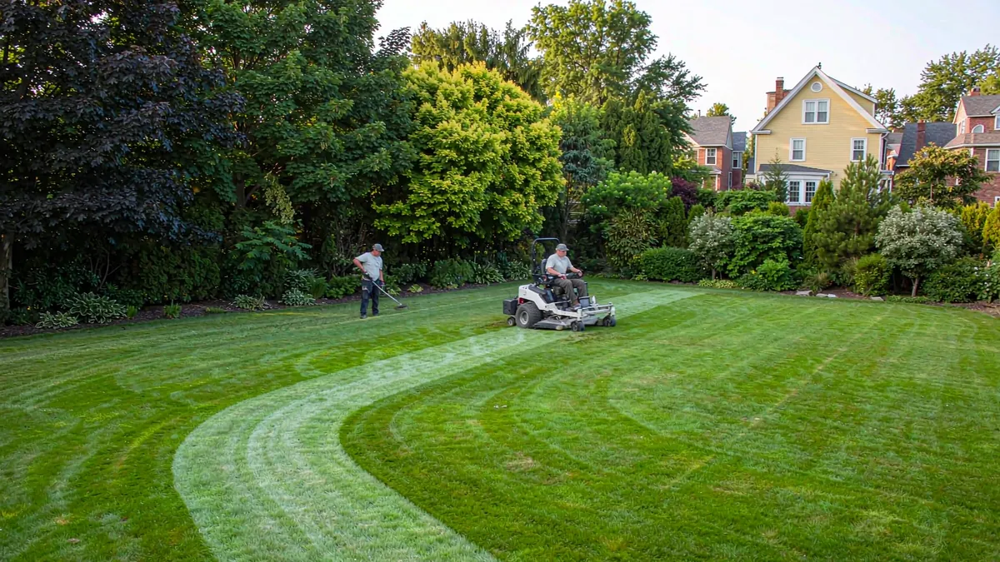
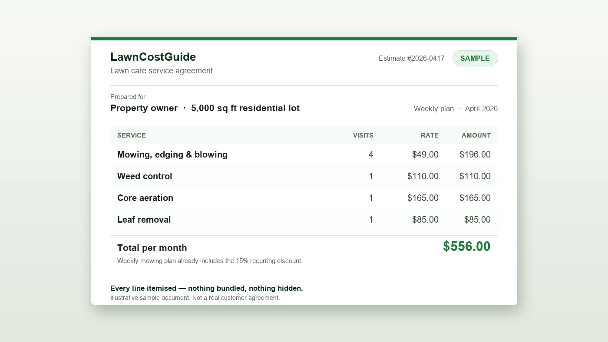

Two tools that save you time
Free Quote Generator
Enter the lawn size, services, and frequency, and get a printable, branded-looking estimate you can hand or email to a customer. No login required. Perfect for on-site quotes and follow-ups.
2026 Pricing Benchmarks
Not sure what to charge? Our calculator shows the published 2026 market ranges (LawnStarter for the US, Mow.ca / Dreame for Canada) by region and service, so your prices land where customers expect them.
Pricing without the guesswork
Our methodology breaks pricing into transparent parts: a per-sq-ft base rate, condition / terrain / obstacle multipliers, recurring-plan discounts, and a regional cost-of-living index. As a pro you can do the reverse — plug your actual numbers into the same model to sanity-check a bid before you send it.
- Small, flat, easy-access lawns: price near the low end of the published range.
- Steep, obstacle-heavy, or overgrown lawns: the terrain and condition multipliers justify a premium — and customers can see why.
- Recurring weekly clients: a small per-cut discount wins the contract and smooths your schedule.

Explaining DIY vs hire to customers
Homeowners often ask "should I just do it myself?" Our DIY vs Hire guide answers that honestly — including the point that DIY wins on cash for most people until their time is worth a lot. Sending it to a price-shopping lead actually builds trust: you look like the straight-shooting pro, not a pushy salesman. The ones who still want a Saturday back become your best recurring clients.
What the market pays, by lawn size
These are the national-average figures our calculator produces for a single one-off mow on flat ground with normal grass and few obstacles — at a 1.00 regional multiplier and a $35 job minimum. Use them as your anchor, then adjust with the multipliers below.
| Lawn size | Per visit | Per sq ft |
|---|---|---|
| 5,000 sq ft | $58 | $0.0115 |
| 7,500 sq ft | $75 | $0.0100 |
| 10,000 sq ft | $90 | $0.0090 |
| ¼ acre (10,890 sq ft) | $95 | $0.0088 |
| ½ acre (21,780 sq ft) | $150 | $0.0069 |
| 1 acre (43,560 sq ft) | $235 | $0.0054 |
| 10 acres | $1,049 | $0.0024 |
Note the shape of the curve: the per-sq-ft rate halves between a 5,000 sq ft lot and a full acre. Your drive time and setup are fixed, so charging a flat per-sq-ft rate overprices big lots and underprices small ones.
Per-square-foot rates, by service
The same calculator, quoted the way a rate card is normally written. Read the middle columns as rates at that specific size — they are not constants, and that is the whole point.
| Service | $/sq ft @ 5,000 | $/sq ft @ 10,000 | Job @ 5,000 | Job @ 10,000 |
|---|---|---|---|---|
| Mowing (per visit) | $0.0115 | $0.0090 | $58 | $90 |
| Weed control | $0.0220 | $0.0173 | $110 | $173 |
| Dethatching | $0.0230 | $0.0180 | $115 | $180 |
| Fertilization | $0.0180 | $0.0141 | $90 | $141 |
| Core aeration | $0.0310 | $0.0243 | $155 | $243 |
| Leaf removal | $0.0300 | $0.0235 | $150 | $235 |
| Overseeding | $0.1000 | $0.0785 | $500 | $785 |
Mulch refresh ($150) and yard cleanup ($200) are quoted flat, not per square foot, because they scale with bed area and debris volume rather than lawn size. Quote them flat.
Pricing questions pros actually ask
How much should I charge to mow a lawn?
Should I charge more for overgrown lawns?
How do I price lawn mowing for a new customer?
1. Measure or estimate the lawn in square feet — satellite imagery first, walk it if the lot is irregular.
2. Read the base price off the table above for that size.
3. Apply the condition multiplier: short 0.9×, tall 1.45×, overgrown 1.9×.
4. Apply terrain (gentle +10%, moderate +20%, steep +35%) and obstacles (moderate +15%, heavy +30%).
5. Apply the frequency discount if they want recurring service.
6. Check the result against your minimum, and walk the property before you commit to a number. Our calculator runs these exact steps — enter the property, then read the breakdown instead of guessing.
What should I charge per square foot?
How much does my region change what I can charge?
Why does a small lawn cost more per square foot than a large one?
Generate your first quote
It takes under a minute and costs nothing. Send homeowners a clean, itemized estimate they can actually read.
Open the Quote Generator →